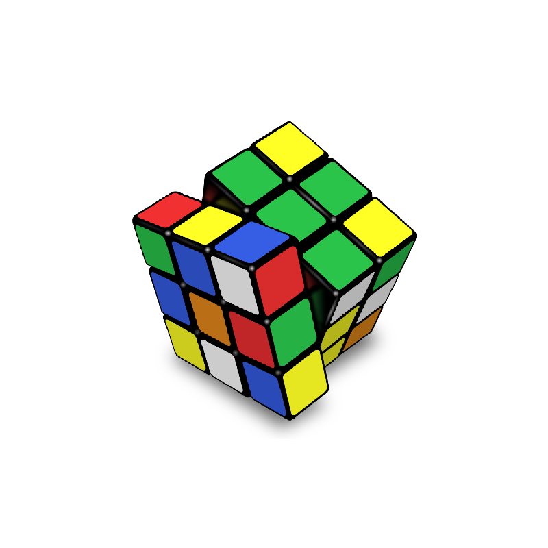

RUBIKOVA KOCKA

Rubikova kocka je mehanička 3D kombinaciona slagalica koju je 1974. godine izumeo mađarski pronalazač i profesor arhitekture Erne Rubik. Kocka je sastavljena od 54 manjih plastičnih kvadrata koji se vrte oko središnjeg jezgra. Svaka od šest stranica koje čine kocku u rešenom obliku je različite boje. Originalna Rubikova kocka dimenzija 3×3×3 ima osam ugaonih kocaka i dvanaest ivica. Postoji 8! načina da se rasporede kocke na uglovima. Od toga, sedam se može postaviti sa tri obojene ivice proizvoljno, dok orijentacija osme zavisi od prethodnih sedam, što daje 37 mogućnosti. Ivice je moguće rasporediti na 12!/2 načina, pošto neparna permutacija uglova povlači za sobom neparnu permutaciju ivica. Jedanaest ivica je moguće rasporediti nezavisno, dok položaj dvanaeste ivice zavisi od rasporeda prethodnih jedenaest, pa postoji 211 različitih mogućnosti. Broj različitih položaja je tačno 43.252.003.274.489.856.000, odnosno:8!×37×12!×210≈4.33×1019{\displaystyle {8!\times 3^{7}\times 12!\times 2^{10}}\approx 4.33\times 10^{19}} Trenutni svetski rekord u rešavanju Rubikove kocke drži Yusheng Du sa 3,47 sekundi. Naučite algoritam za sklapanje ove najprodavanije igračke i zakoračite u svet speedcubinga! Naše časove Rubikove kocke vode iskusni nastavnici koji su strastveni u podučavanju dece kodiranju. Oni će voditi decu kroz proces stvaranja, kritičkog razmišljanja, rešavanja problema i ovladavanja veštinama računarskog mišljenja. Iskusite najbolji kurs kodiranja za decu i vidite razliku!